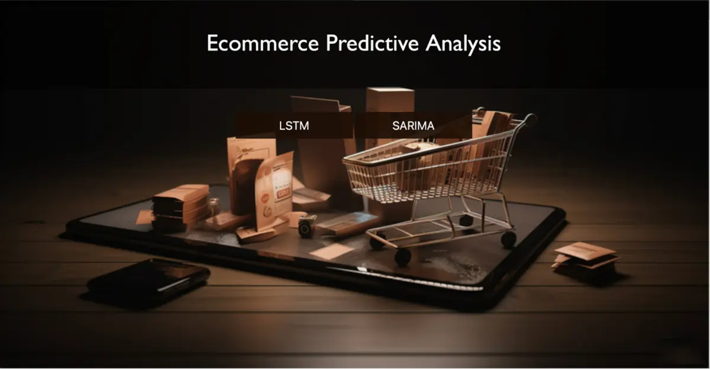
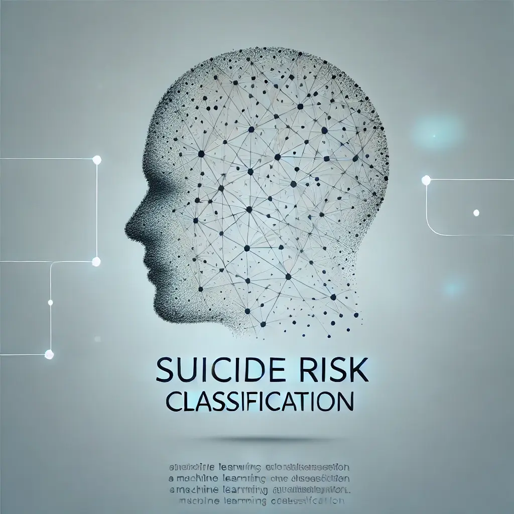
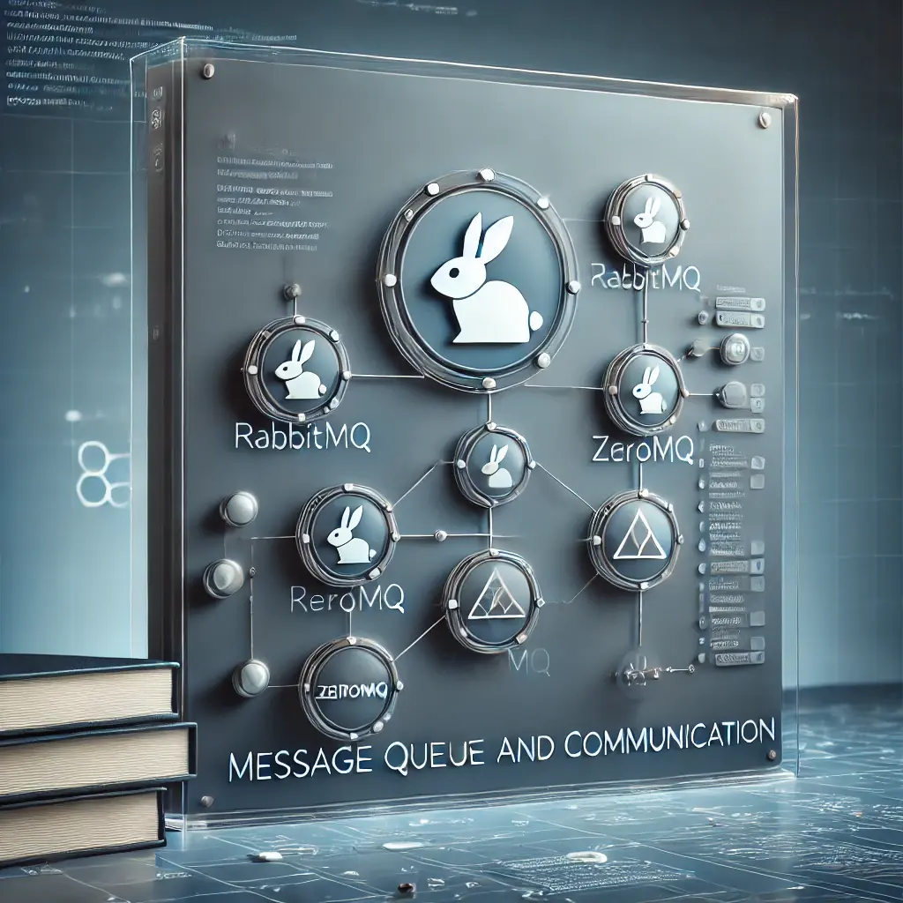
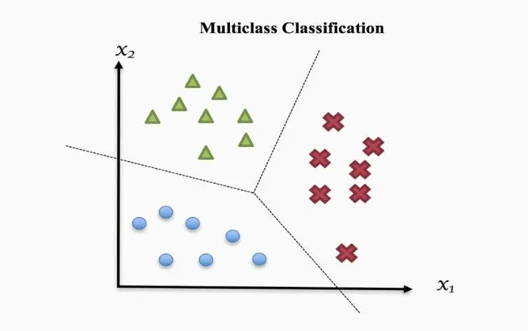

I build LLM evaluation pipelines, NLP systems, and cloud-scale ML workflows — turning messy real-world data into models that ship. Python · R · SQL · PyTorch · AWS.
I'm a Machine Learning Engineer and Data Scientist based in Jersey City, NJ, with 5+ years of Python experience and 2+ years of hands-on machine learning and AI research. My recent work centers on large language models — building evaluation pipelines, fine-tuning frontier models, and validating outputs with rigorous statistical analysis — alongside scalable data engineering on AWS.
The languages, frameworks, and platforms I use to take models from notebook to production.
Hands-on builds spanning cloud ML platforms, NLP, distributed systems, and computer vision.

Machine learning–driven platform built on AWS (S3, SageMaker, Lambda) to analyze customer behavior and predict purchasing trends — improving product recommendation accuracy by 5% end to end, from raw data to deployed model.
View on GitHub
Multi-class classifier using fine-tuned BERT on the UMD Reddit Suicidality Dataset, with advanced feature engineering (TF-IDF, Word2Vec) and hyperparameter tuning for mental-health AI applications.
View on GitHub
High-performance messaging system containerizing RabbitMQ and ZeroMQ with Docker — improving real-time data processing, reliability, and scalability across distributed services.
View on GitHubTime-series forecasting model predicting Amazon stock prices from API-sourced historical data, generating weekly predictions with machine learning and Python-based data engineering.
View on GitHub
Deep learning models (InceptionV3, ResNet152V2) classifying a 20,000-image dataset — top 8th of 44 teams in a Kaggle competition using data augmentation and model ensembling.
View on GitHubI'm currently open to machine learning and data science opportunities. Reach out — I'd love to talk.